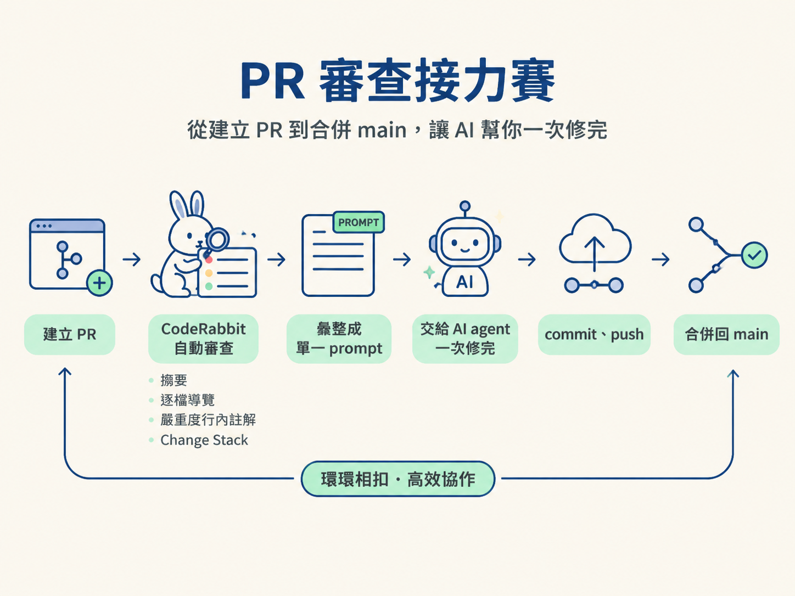
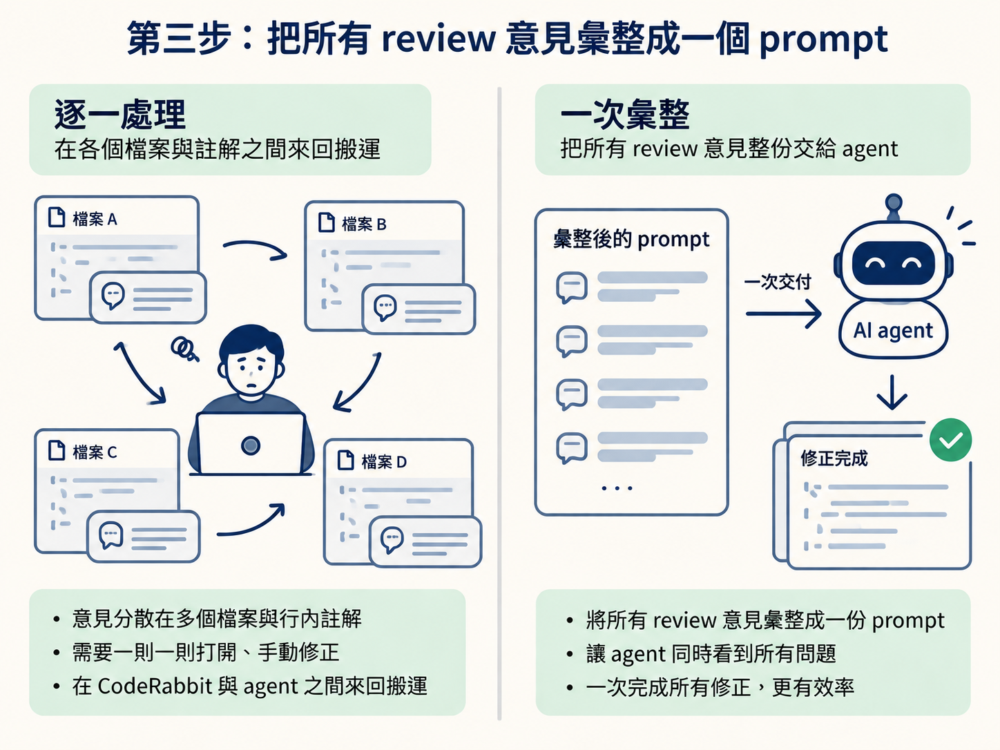

完成這一節後，你會把 GitHub 上的 Pull Request（PR）交給 CodeRabbit 審查，讀懂它整理出的嚴重度排序與 Change Stack，再把彙整後的 review 意見交回 Codex 或 Claude 等 agent，修完程式、更新 PR，最後合併回 main。
開始前，請先準備兩件事：一個 GitHub 帳號上的 PR，以及一個已連到 GitHub 的 CodeRabbit 帳號。註冊 CodeRabbit 時可以用 GitHub 登入授權，再從 repositories 分頁加入要審查的 repo。它可以免費起步，也支援 GitHub、GitLab、Bitbucket 與 Azure。
整體流程可以想成一條接力賽：先把分支開成 PR，再讓 CodeRabbit 找問題；接著把所有意見整理成一個 prompt，交給 agent 一次修完，最後 commit、push，並將 PR 合併回 main。

分支推上 GitHub 後，通常會看到 compare & pull request 的提示。按下它，就能開始建立 PR。
如果提示沒有出現，也可以從 repo 的分支頁面自行發起。建立時要確認 PR 的兩端：
main。填好標題，再確認變更清單沒有問題，就可以建立 PR。從 VS Code 操作時，完整順序會是：建立分支、stage、commit、publish，再建立 PR。這就是上一節流程的延伸。
PR 建立後，CodeRabbit 會自動被觸發，開始檢查這個 PR 裡的改動。
CodeRabbit 需要一點時間處理改動量較大的 PR。課程中的範例約有一萬三千行改動、橫跨一百二十八個檔案，大約花了十分鐘。等待時可以先去處理其他事情，完成後再回到 PR 頁面查看結果。
CodeRabbit 主要會提供以下幾種輸出：
| 輸出 | 它在告訴你什麼 |
|---|---|
| PR 摘要 | 用鳥瞰角度說明這批改動整體在做什麼 |
| 逐檔導覽 | 逐一說明每個檔案改了哪些地方 |
| 嚴重度排序的行內註解 | 把最該優先處理的 critical 意見，直接標在對應的程式碼行上 |
| Change Stack | 把整批改動自動分成十幾個類別，方便按主題閱讀 |
| 與 PR 對話的 agent | 可以直接針對這個 PR 提問、請它解釋，或請它生成修正方式 |
改動量一大，逐行翻檔案就像在一整座倉庫裡找最危險的箱子。這時，嚴重度排序的行內註解會先把高風險問題指出來，讓你不用平均分配注意力，而是先處理最重要的地方。
Change Stack 則會把原本混在一起的檔案清單，依照改動性質分成十幾個類別。你可以按主題閱讀，而不是從第一個檔案一路滑到最後一個。課程特別提到，GitHub、GitLab 這類平台在這方面不如 CodeRabbit，因此這個分類在大型 PR 中很省時間。
看到一長串審查意見時，直覺做法可能是逐則打開、逐則手動修正。這種做法不只慢，也容易漏掉某一則意見，或在修正不同問題時互相衝突。
比較好的做法是用 CodeRabbit 的功能，把所有 review 意見整理成一份給 AI agent 的 prompt。按下對應按鈕後，將它產生的完整內容複製下來，再貼回平常使用的 agent，例如 Codex 或 Claude。
若 review 意見分散在許多檔案和行內註解中，就把整份彙整 prompt 一次交給 agent。這樣 agent 能同時看到所有問題、一次修完，你也不用在 CodeRabbit 與 agent 之間來回搬運十幾次意見。

課程中的範例大約一分鐘就完成修正。這一步要的是「一次彙整、一次交付」，把整批建議集中處理，而不是讓 agent 一次只改一個小地方。
agent 修正完成後，先檢查它產生的改動。確認內容符合 review 意見後，將改動 stage、commit，再推回遠端。原本的 PR 會自動更新成修正後的版本。
git add .
git commit -m "fix: 依 CodeRabbit review 意見修正"
git push接著就可以合併 PR，將整條分支的成果併回 main。完成合併後，切回 main，再同步一次，確保本機看到的是最新狀態。
合併是會改變主分支狀態的動作。按下合併前，至少要確認 PR 的變更清單與 agent 的修正都符合預期；合併後則要在 main 上確認程式仍能正常運作。
常見的疑問是：agent 修完後，要不要等 CodeRabbit 再審查第二輪，才能合併？課程中的做法是不需要。
這批修正本來就是針對 CodeRabbit 已經指出的問題。完成修正、commit 並 push 後，可以直接合併，不必把流程卡在第二輪 review。真正的驗證方式，是合併後切到 main，確認程式仍然能運作。
完成這套流程後，結果會是：分支已透過 PR 合併回 main，CodeRabbit 找出的問題已交給 agent 集中修正，修正內容也已經 commit 並推回遠端。你不需要逐則手動搬運 review 意見，也不必為了第二輪審查停住整個流程。
分支推上去之後開一個 PR，讓 CodeRabbit 審查每一行。它會提供摘要、逐檔導覽、嚴重度排序的行內註解，以及按主題分類的 Change Stack。修正時，不要一則一則手動處理；把它彙整好的「給 AI agent 的意見」整份交回 agent，一次修完，再 commit、push，最後合併。不必等待第二輪重審。
PR 合併、切回 main 之後，你可能會看到一筆自己沒有印象的改動。那通常不是什麼錯誤，只是 agent 在你沒注意時加入的設定。其中最需要小心的，是與金鑰有關的內容。下一節會把「什麼絕對不該進 repo」講清楚。